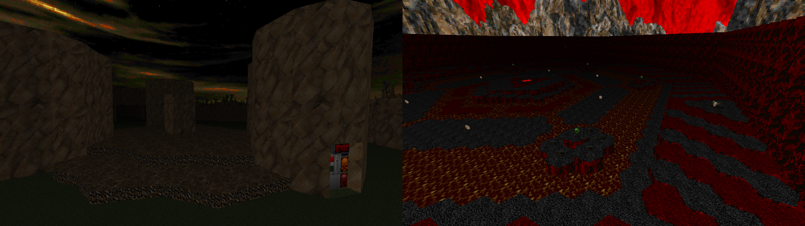

DOWNLOAD LINKS


| Year | 2021 |
| IWAD | doom2.wad |
| Source port | Boom-compatible |
| Game mode(s) | Single-player, Coop (partial), DM (partial) |
| Map(s) contributed | MAP09, MAP14 |
| Other contributions | Graphics, *MAPINFO, project lead |
3×3 came to existence as a community project hosted by Yours Truly between and around Christmas of 2020 and the following New Year. Participating mappers were given a week to make up to 2 maps each under the following restrictions: only 3 flats, 3 textures and 3 enemy types were allowed to be used. A select few textures and flats, however, were excluded from the limitation, namely the DOOR***(2) textures and F_SKY1. By the deadline, the project ended up gathering 29 maps in total.
My own two contributions into the project on the mapping side occupy the MAP09 and MAP14 slots respectively. The former is “They Come At Knight”, a small valley/cave-style map with a foreboding start that has the player finding three keys before fighting a bunch of Hell Knights and Barons. And a Cyberdemon. The latter is “Hecks’d”, a single-room (pseudo-)slaughtermap made into an entirely hexagon-based layout.
Being the project lead on 3×3, I was in charge of essentially overseeing the whole thing and deciding which maps made the cut and which didn’t. Much to my own shock, I only ended up rejecting 2 submissions out of 29. Additionally, I compiled the “final” megawad, made the graphics and wrote the (E/Z)MAPINFO lumps.